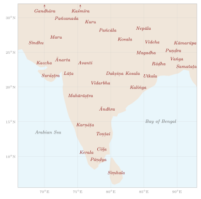

Chapter 12: Regions, Realms and Boundaries: From Janapada to State¶
The map of modern India is divided into states whose names are mostly old: Gujarat, Maharashtra, Bengal, Odisha, Kerala, Punjab, Kashmir. Behind each name lies a long history of peoples, kingdoms and administrative units, and of shifting boundaries between them. Earlier chapters described the land’s physical regions—its rivers, mountains and coasts. This chapter turns to political and administrative geography: the janapadas and the normative regions of the early texts, how kingdoms and empires described and divided the territory they ruled, how the historical regions of the subcontinent took shape and got their names, how place-names record the history of settlement, how boundaries were marked, and how the provinces of British India became the linguistic states of the Republic. Its principal guides are D. C. Sircar’s studies of the geography of the inscriptions and Joseph Schwartzberg’s Historical Atlas of South Asia (Sircar 1971; Schwartzberg 1978).
12.1 What Is a Region?¶
Geographers and historians have approached the regions of South Asia in two ways. One starts from the land. O. H. K. Spate’s India and Pakistan (1954), the classic regional geography of the subcontinent, divided it into regions defined by relief, climate, soils and drainage, and then showed how each had shaped, and been shaped by, its history (Spate 1954). The archaeologist Bendapudi Subbarao proposed in The Personality of India a simple and influential scheme: the great alluvial plains and deltas were “areas of attraction”, where population, agriculture and states concentrated; the forested hills of middle India and the north-east were “areas of isolation”, where older ways of life persisted; and between them lay “areas of relative isolation”, open to influence but able to keep their own character (Subbarao 1958).
The other approach starts from people. Bernard Cohn distinguished “objective” regions, drawn by an observer on the basis of chosen criteria, from “subjective” regions, those that their own inhabitants recognise and name, through a shared language, literature, cult centres, marriage networks and memories of a kingdom (Cohn 1967). The two do not always coincide. A region such as Bengal or the Tamil country is both: a physical unit and a cultural one with its own name and literature. Others, such as the Deccan, are clear on a physical map but have been divided among several linguistic and political regions for most of their history.
Maps of the states of South Asia over time, of which Schwartzberg’s Atlas is the fullest set, show a further pattern. Power repeatedly formed in a small number of “nuclear” areas—the middle Gaṅgā valley around Magadha, the Gaṅgā–Yamunā Doab, Gujarat, the Kāverī delta, the Krishna–Godāvarī deltas, the upper Indus plains—while certain zones between them were contested again and again: the Raichur Doab between the Krishna and the Tuṅgabhadrā, fought over by Cālukyas and Cōḻas and later by Vijayanagara and the Bahmanī sultans, is the classic example (Chapter 9; (Schwartzberg 1978)). Historians of early medieval India have shown how regional kingdoms grew up in such areas from the sixth century onward, by the extension of agriculture, the settlement of Brahmins on granted land, the building of temples and the incorporation of local chiefs and cults (Chattopadhyaya 1994; Kulke 1995). Many of the regions of modern India took their lasting form in that period.
12.2 Janapadas and the Normative Regions¶
12.2.1 Janapadas¶
The word janapada, “the foothold of a people (jana)”, refers to a territory named after the people who lived in it and, in the period from c. 600 BCE, to the states that formed there. Pāṇini (c. 4th century BCE) gives grammatical rules for forming the names of peoples and their countries, and Buddhist and Jain texts list the “great janapadas” (mahājanapada). The best-known list, in the Pali Aṅguttara Nikāya, gives sixteen (Table 12.1); the Jain Bhagavatī Sūtra gives a different sixteen. The Pali list reflects the political map of north India around the fifth century BCE as remembered by the compilers of the canon (Thapar 2002).
| Mahājanapada | Capital | Approximate region |
|---|---|---|
| Aṅga | Campā | eastern Bihar (near Bhagalpur) |
| Magadha | Rājagṛha (Rājgir) | southern Bihar |
| Kāśī | Vārāṇasī | eastern Uttar Pradesh |
| Kosala | Śrāvastī | eastern Uttar Pradesh |
| Vajji (Vṛji) | Vaiśālī | northern Bihar |
| Malla | Kuśinārā, Pāvā | eastern Uttar Pradesh |
| Ceti (Cedi) | Sotthivatī | Bundelkhand |
| Vaṃsa (Vatsa) | Kauśāmbī | near Prayagraj |
| Kuru | Indapatta (Indraprastha) | Delhi–Haryana region |
| Pañcāla | Ahicchatra, Kāmpilya | western Uttar Pradesh |
| Maccha (Matsya) | Virāṭanagara | north-eastern Rajasthan |
| Śūrasena | Mathurā | the Mathurā region |
| Assaka (Aśmaka) | Potana | on the Godāvarī, Deccan |
| Avanti | Ujjayinī | western Madhya Pradesh (Malwa) |
| Gandhāra | Takṣaśilā | north-western Pakistan |
| Kamboja | uncertain | eastern Afghanistan |
The list is not a survey of the whole subcontinent: it says nothing of the far south, the east beyond Aṅga or the north-east. In the Buddha’s lifetime Kosala had already absorbed Kāśī and Magadha absorbed Aṅga, and Magadha went on to become the core of the Nanda and Maurya empires.
12.2.2 The Middle Country and Āryāvarta¶
Classical writers divided the subcontinent into a small number of large regions. The Manusmṛti (c. 2nd century CE) defines the Madhyadeśa, the “Middle Country”, as the land between the Himālaya and the Vindhya, east of Vinaśana (where the Sarasvatī disappears) and west of Prayāga (2.21), and Āryāvarta as the land between the same mountains from the eastern to the western sea (2.22). These are normative definitions of the land in which Brahmanical norms were held to apply, not neutral descriptions, and the boundary of Āryāvarta shifted from text to text (Olivelle 2005).
Buddhist texts have their own Middle Country (Pali Majjhimadesa). The monastic code (Vinaya, Mahāvagga 5) defines it by boundary markers: the town of Kajaṅgala in the east, the river Salalavatī in the south-east, the town of Setakaṇṇika in the south, the brahmin village of Thūṇa in the west and the mountain Usīraddhaja in the north. Monks living outside this region, in the “border countries”, were allowed relaxations of certain rules—for instance, ordination by a smaller number of monks, and the use of sandals and leather mats. The Buddhist Middle Country lay further east than the Brahmanical Madhyadeśa, centred on Magadha and Kosala rather than the Gaṅgā–Yamunā Doab: each tradition placed the normative centre in its own heartland.
12.2.3 The Five Divisions and Rājaśekhara’s Geography for Poets¶
The Purāṇas describe a five-fold division: the Middle Country, and the eastern (Prācya or Pūrvadeśa), southern (Dakṣiṇāpatha), western (Aparānta or Paścāddeśa) and northern (Udīcya or Uttarāpatha) regions. Varāhamihira’s Kūrmavibhāga instead uses nine divisions, the Middle Country and the eight directions, laid out as if on the body of a tortoise (Section 3.4).
The fullest statement of the five-fold scheme is by Rājaśekhara, a poet and dramatist at the court of the Gurjara-Pratīhāra kings of Kanauj in the early tenth century, in the chapter on the division of places (deśavibhāga) of his Kāvyamīmāṃsā, a manual for poets. He fixes the divisions by boundary points: the eastern country lies beyond Vārāṇasī, the southern road beyond Māhiṣmatī on the Narmadā, the western country beyond Devasabhā (whose site is uncertain), and the northern road beyond Pṛthūdaka (Pehowa, near Kurukṣetra). Between them lies the Middle Country, and at its heart the Antarvedī, the land between the Gaṅgā and the Yamunā from Vinaśana to Prayāga. For each division he then names its countries, mountains, rivers and products. The purpose is literary: a poet’s descriptions must be true to place and season, and a companion chapter treats the seasons in the same way. But the result is a compact regional geography of India as seen from Kanauj, and historians have used its lists in identifying the names of early medieval regions (Sircar 1971; Law 1954).
Such schemes organised the peoples and places of India around a centre in the Gaṅgā–Yamunā region, and they tell us as much about the viewpoint of their authors as about the land. The regions that later took shape on the ground, and the names they acquired, are the subject of the rest of this chapter.
12.3 The Geography of Empire in the Inscriptions¶
The earliest documents that describe the territory of an Indian state as a whole are inscriptions.
12.3.1 Aśoka¶
The edicts of Aśoka (c. 268–232 BCE) are themselves a map of his empire. Versions of the Major Rock Edicts were engraved at the edges of the realm: at Shahbazgarhi and Mansehra in the north-west, in the Kharoṣṭhī script; at Kalsi in the Himalayan foothills; at Girnar in Saurashtra; at Sopara on the Konkan coast; at Dhauli and Jaugada in Odisha; at Erragudi in Andhra and Sannati in Karnataka; and, in Greek and Aramaic, at Kandahar in Afghanistan. The Minor Rock Edicts are found from Bairat and Sasaram in the north to Karnataka and Andhra Pradesh, where they are most numerous. Most call the king only by his titles, devānaṃpiya and piyadasi; at least four of them—at Maski, Nittur and Udegolam in Karnataka and Gujarra in Madhya Pradesh—also give his personal name, Aśoka, and it was the discovery of the Maski inscription in 1915 that confirmed the identification of Piyadasi with the Aśoka of the Buddhist chronicles. Their distribution shows an empire that reached from Afghanistan to the borders of the Tamil country and was held together by roads that carried officials and royal messages to its frontiers.
The edicts also reveal its provincial structure. Princes (kumāra, āryaputra) governed from Takṣaśilā in the north-west, Ujjayinī in the west, Suvarṇagiri in the south and Tosalī in conquered Kaliṅga, and officials (mahāmātra) were posted at Tosalī and Samāpā; the Separate Rock Edicts of Dhauli and Jaugada are addressed to them. The location of Suvarṇagiri is uncertain. The Rock Edicts name the officials who toured the districts (rājūka, prādeśika), and they distinguish three kinds of people at or beyond the edges of the realm: the forest peoples (aṭavī) within it, whom Aśoka warns as well as conciliates in the thirteenth Rock Edict; the peoples of the borderlands within the realm, among them Yonas, Kambojas, Andhras and Pulindas; and the independent neighbours, the Coḍas, Paṇḍiyas, Satiyaputas and Keralaputas of the south, Tambapaṃṇi (Sri Lanka), and the Hellenistic kings of the west, whom the second and thirteenth Rock Edicts name (Thapar 2002).
12.3.2 Samudragupta¶
The praise-poem (praśasti) of the Gupta king Samudragupta (c. 335–375 CE), composed by his minister Hariṣeṇa and engraved on an Aśokan pillar now at Prayagraj (the “Allahabad pillar”), describes the king’s conquests as a set of concentric zones. In Āryāvarta, the northern plain, nine kings were violently uprooted and their lands annexed. In Dakṣiṇāpatha twelve kings, among them the rulers of Kosala, Mahākāntāra, Piṣṭapura, Kāñcī and Veṅgī, were captured and then released and reinstated. All the kings of the forest country (āṭavika) were made servants. The frontier kingdoms (pratyanta) of Samataṭa, Ḍavāka, Kāmarūpa, Nepāla and Kartṛpura paid tribute and homage, as did a series of peoples of the west and north-west, among them the Mālavas, Yaudheyas, Mādrakas and Ābhīras. Beyond them were distant rulers, including the Kuṣāṇa “son of god”, the Śakas and the people of Siṃhala, who sent embassies and gifts. Whatever its exaggerations, the inscription is a political geography of the fourth-century subcontinent: a core of directly ruled territory, a ring of tributaries, a forest zone and a frontier of independent peoples (Thapar 2002; Sircar 1971).
12.3.3 Rudradāman¶
A third inscription gives the territory of a western Indian king. On the rock at Girnar that already bore Aśoka’s edicts, the Western Kṣatrapa (Śaka) ruler Rudradāman recorded in 150 CE the repair of the Sudarśana lake (Chapter 9), and listed the lands he ruled: eastern and western Ākara and Avanti, Anūpa, Ānarta, Surāṣṭra, Śvabhra, Maru, Kaccha, Sindhu–Sauvīra, Kukura, Aparānta and Niṣāda—that is, roughly Malwa, the Narmadā valley, northern Gujarat, Saurashtra, the Sabarmatī country, the desert, Kutch, the lower Indus, the Konkan and the forest country of the Niṣādas, together with Kukura, whose location is uncertain. Several of these names were still in use a thousand years later.
12.3.4 The Conquest of the Quarters¶
What the inscriptions claim for real kings, literature claimed for ideal ones. The digvijaya, the “conquest of the quarters”, is a literary form in which a king marches in turn to each direction and receives the submission of its peoples, so that the narrative becomes a tour of the known world. In the Sabhāparvan of the Mahābhārata, Yudhiṣṭhira’s brothers march in the four directions and receive tribute from long lists of peoples. In the fourth canto of Kālidāsa’s Raghuvaṃśa, King Raghu marches east to the Suhmas and Vaṅgas of Bengal, crosses the Kapiśā into Utkala and Kaliṅga, goes south to the Kāverī, the Pāṇḍyas, the Malaya and Kerala, turns west to the Aparānta coast, goes by land against the Pārasīkas, fights the Hūṇas on the banks of the Vaṅkṣu (the Oxus; some manuscripts read Sindhu), subdues the Kambojas and the mountain peoples of the Himālaya, and returns through Prāgjyotiṣa and Kāmarūpa. The canto is a poetic survey of the world as seen from the Gupta court, organised, like Samudragupta’s inscription, as a centre and its circuit.
The same lists show how the lands beyond the subcontinent were known: mainly by the names of their peoples. The Yavanas (originally Ionian Greeks, later westerners in general), Śakas (Scythians), Pahlavas (Parthians), Pārasīkas (Persians), Hūṇas, Cīnas (Chinese), the Romaka (Rome or Byzantium) and the people of Suvarṇabhūmi appear in epics, law books, astronomical texts and inscriptions. Some names reflect real knowledge of distant states; others had become stock lists of outsiders (mleccha).
12.4 Divisions of the Kingdom¶
The Arthaśāstra gives an ideal scheme. Its chapter on settling the countryside (2.1) tells the king to found villages of between one hundred and five hundred families, their boundaries marked by rivers, hills, forests, ravines, embankments and trees, and to arrange a hierarchy of administrative centres: a sthānīya for every eight hundred villages, a droṇamukha for four hundred, a khārvaṭika for two hundred and a saṃgrahaṇa for every ten (Olivelle 2013). The scheme is symmetrical, like much of the text, but it shows how a theorist of the state thought about organising territory: by counting settlements, fixing boundaries and placing centres at regular levels. The records of actual kingdoms are less tidy.
From the Gupta period onward, thousands of copper-plate grants record gifts of land to Brahmins, temples and monasteries. Because a grant had to identify the land precisely, it located the village within the administrative divisions of the kingdom, and these formulas are the main evidence for how territory was organised. Sircar’s Indian Epigraphical Glossary and his studies of the geography of the inscriptions collect the terms (Sircar 1966, 1971). Table 12.2 gives the main hierarchies.
| State and period | Units | Officials and notes |
|---|---|---|
| Maurya (3rd c. BCE) | provinces under princes; districts; villages | kumāra, mahāmātra, rājūka, prādeśika |
| Gupta, north India and Bengal (4th–6th c.) | deśa or bhukti \(\rightarrow\) viṣaya \(\rightarrow\) vīthī \(\rightarrow\) grāma | uparika over a bhukti; viṣayapati with a district council (adhikaraṇa) |
| Pāla and Sena, Bengal (8th–12th c.) | bhukti \(\rightarrow\) maṇḍala \(\rightarrow\) viṣaya \(\rightarrow\) grāma | the relative order of maṇḍala and viṣaya varies between grants; old units such as Puṇḍravardhana-bhukti persist for centuries |
| Rāṣṭrakūṭa, Deccan (8th–10th c.) | rāṣṭra \(\rightarrow\) viṣaya \(\rightarrow\) bhukti \(\rightarrow\) grāma | rāṣṭrapati, viṣayapati; here the bhukti is a small unit |
| Cālukya and Hoysaḷa, Karnataka (10th–13th c.) | divisions bearing conventional numbers: Gaṅgavāḍi 96,000, Nolambavāḍi 32,000, Banavāsi 12,000; smaller units of 300 or 70 | the meaning of the numbers is debated |
| Cōḻa, Tamil country (10th–13th c.) | maṇḍalam \(\rightarrow\) vaḷanāḍu \(\rightarrow\) nāḍu \(\rightarrow\) ūr | vaḷanāḍus created under Rājarāja I; assemblies of the nāḍu (nāṭṭār) and the village |
| Delhi Sultanate (13th–15th c.) | iqṭāʿ or wilāyat \(\rightarrow\) shiqq \(\rightarrow\) pargana \(\rightarrow\) village | muqṭiʿ holding an assignment; terms varied over time |
| Mughal (from 1580) | ṣūba \(\rightarrow\) sarkār \(\rightarrow\) pargana (maḥal) \(\rightarrow\) mauẓaʿ | governor and dīwān; faujdār; qānūngo and chaudhurī (Chapter 7) |
| Maratha (17th–18th c.) | prānt \(\rightarrow\) sarkār \(\rightarrow\) pargaṇā or tarf \(\rightarrow\) mauje | units largely inherited from the Deccan sultanates |
| British India | presidency or province \(\rightarrow\) division \(\rightarrow\) district \(\rightarrow\) tahsīl or tāluk \(\rightarrow\) village | collector and commissioner; many districts follow Mughal sarkārs |
Three features of this vocabulary are worth noting. First, the same word could mean different things in different kingdoms: the bhukti was a province in Gupta Bengal but a small unit in the Rāṣṭrakūṭa Deccan. Secondly, units were often named after their chief town or an old people, and such names outlived the states that created them; the Puṇḍravardhana-bhukti of the Gupta plates is still named in Sena grants some seven centuries later. Thirdly, in many regions the smaller units were older than the kingdoms that listed them. The Tamil nāḍu, a cluster of villages forming a natural agrarian locality with its own assembly, appears to have existed before the Cōḻas and to have persisted under them; Y. Subbarayalu mapped the nāḍus of the Cōḻa country from inscriptions, and Burton Stein argued that they, rather than the royal centre, were the basic units of medieval South Indian society (Subbarayalu 1973; Stein 1980). Stein’s wider model of a “segmentary state” has been much criticised, but the importance of the nāḍu is generally accepted.
The numbered divisions of medieval Karnataka are a puzzle of their own. Inscriptions speak of “Gaṅgavāḍi Ninety-six Thousand” or “Banavāsi Twelve Thousand” as standing names. The figures are too round, and too stable over centuries, to be counts of villages at the time of writing; they may have begun as notional revenue or village figures attached to a territory and then become part of its name (Sircar 1971). Something similar may lie behind the Aihole inscription of 634, which credits the Cālukya king Pulakeśin II with lordship over “the three Mahārāṣṭrakas” containing ninety-nine thousand villages.
12.5 How the Regions Got Their Names¶
The historical regions of the subcontinent took their names from peoples, from dynasties, from landforms, and in a few cases from foreign usage. Figure 12.1 places the principal older names approximately on a map.

12.5.1 The North and North-West¶
Gandhāra, the Peshawar valley and the country east of the Indus around Takṣaśilā, and Kaśmīra are among the oldest regional names that are still in use, the first in the Vedic and Achaemenid record, the second in Pāṇini and the epics. The land of the five rivers was Pañcanada in Sanskrit; its modern name, Panjab or Punjab, is the Persian panj āb, “five waters”, which first became common in the Mughal period; other river names of regions, such as Antarvedī and the Persian doāb, are discussed in Chapter 9. Sindh preserves the name of the river, Sindhu, which also gave the world the words “Hindu” and “India” (Chapter 1).
12.5.2 The East¶
Bihar takes its name from the Buddhist monasteries (vihāra) of the region, through the town of Bihar Sharif, whose name became that of the Mughal ṣūba. The older names—Magadha in the south of the province, Videha or Mithilā in the north—survive in literature, in the Maithili language and in cultural identity. The early regions of Bengal were several: Puṇḍra or Varendra north of the Gaṅgā, Rāḍha to the west, Vaṅga in the centre and east, and Samataṭa and Harikela in the south-east. The name of one of them, Vaṅga, came to stand for the whole: the Persian Bangāla became the name of the sultanate that Shams al-Dīn Ilyās Shāh united in the mid-fourteenth century, and then of the Mughal province (Chapter 7). Odisha keeps the name of the Oḍra people, beside the older Kaliṅga of Aśoka’s conquest and Utkala; Assam is usually derived from the name of the Ahom dynasty that ruled the Brahmaputra valley from the thirteenth century, while its classical names were Prāgjyotiṣa and Kāmarūpa.
12.5.3 The West and the Deccan¶
Gujarat is named after the Gurjaras, who ruled parts of western India from the sixth century; the Sanskrit Gurjaratrā, “the land protected by the Gurjaras”, became Gujarāt. Its older sub-regions, Ānarta in the north, Lāṭa in the south and Surāṣṭra (Saurashtra) in the peninsula, appear in Rudradāman’s inscription and survive as regional names. Rajasthan is a modern name. The colonial term “Rajputana”, the land of the Rajput states, was used from about 1800, and James Tod’s Annals and Antiquities of Rajast’han (1829–32) popularised the form that the new state adopted when the Rajput states were united after 1947; older names, Maru (the desert, as in Marwar), Mewāṛ and others, named its parts. Avanti, the country of Ujjayinī, became Mālava, Malwa, after the Mālava people who are thought to have moved there from the north-west in the last centuries BCE.
Maharashtra appears in the Aihole inscription of 634 and in the name of the Prakrit of the region, Mahārāṣṭrī; its sub-regions included Vidarbha in the east and Aparānta, the Konkan coast. The word Deccan itself is the Prakrit dakkhiṇa, Sanskrit dakṣiṇa, “south”.
12.5.4 The South¶
The Andhras are named in the Aitareya Brāhmaṇa among peoples beyond the Brahmanical pale, and Āndhra is the name of the Telugu country in Sanskrit. A second name, Tiliṅga or Teliṅgāṇa, is attested in inscriptions and in Persian chronicles of the Delhi Sultanate (Tilang) and survives in Telangana; Cynthia Talbot has shown how a sense of a Telugu region took shape under the Kākatīyas of Warangal in the twelfth and thirteenth centuries (Talbot 2001). Karṇāṭa, of uncertain etymology, named the Kannada country. The Tamil land, Tamiḻakam, was defined in the preface to the Tolkāppiyam as the region between Vēṅkaṭam (the Tirupati hills) in the north and Kumari in the south, and was divided among the three ancient kingdoms of the Cēras, Cōḻas and Pāṇḍyas. Their names appear already in Aśoka’s edicts, and the Cōḻamaṇḍalam, “the realm of the Cōḻas”, gave Europeans the name of the whole south-eastern coast, Coromandel. Kerala is the Keralaputa of Aśoka; the Arabic and Persian name of its coast was Malabar.
12.6 Homelands in the Regional Literatures¶
Names given by kings and grammarians are only half the story. From the late first millennium onward, the literatures of the regional languages began to describe their own lands as homelands, defined by the language spoken in them, by their rivers and shrines, and by stories of their origin. These are Cohn’s “subjective” regions in the making, and Sheldon Pollock has placed them within a wider shift, between about the ninth and the fourteenth centuries, in which regional languages became languages of literature and of political expression alongside Sanskrit (Pollock 2006).
-
Kannada. The Kavirājamārga (“The Royal Road of Poets”), a work on poetics written at the Rāṣṭrakūṭa court in the mid-ninth century, describes the land in which Kannada is spoken as stretching from the Kāverī to the Godāvarī, and praises the skill of its people in speech. The definition is literary, not administrative, and it reached further north than the Kannada-speaking area of later centuries; but it is one of the earliest statements in any Indian language that a land is defined by its language.
-
Tamil. The Cilappatikāram, the Tamil epic of Kaṇṇaki and Kōvalaṉ, is divided into three books named after the capitals of the three Tamil kingdoms—Pukār of the Cōḻas, Madurai of the Pāṇḍyas and Vañci of the Cēras—so that the story travels across the whole Tamil land. Together with the Tolkāppiyam’s definition of Tamiḻakam, it presents the Tamil country as a single cultural world divided among several kingdoms. This idea was taken up with new force in the Tamil movements of the late nineteenth and twentieth centuries.
-
Telugu. A popular tradition derives the name of the Telugu country from Trilinga, “three liṅgas”, and describes it as the land bounded by the Śaiva shrines of Śrīśailam, Kāleśvaram and Drākṣārāmam. The etymology is doubtful, but the tradition defines a region by the sacred places at its corners, much as Hindu sacred geography defined the whole of India by the four dhāms (Chapter 4).
-
Marathi. The Mahānubhāva texts of the thirteenth century, beginning with the Līḷācaritra (Chapter 1), give special value to Maharashtra as the land in which Cakradhara lived and taught. Anne Feldhaus has shown how, in later centuries, river goddesses, pilgrimages and festival processions connected places across the Marathi-speaking country and gave its people a sense of belonging to a common region (Feldhaus 2003).
-
Kerala and the Konkan. The Malayalam Kēraḷōlpatti (“The Origin of Kerala”), a traditional history compiled in the early modern period, tells how Paraśurāma threw his axe into the sea and raised the land of Kerala from the water, and how he settled it with Brahmins in sixty-four villages. A similar story is told of the Konkan coast in the Sahyādrikhaṇḍa. Such origin stories explained the narrow coastal strip between the mountains and the sea, and they also served to justify the privileges of the Brahmin landholders who told them.
-
Kashmir and Odisha. The Nīlamata Purāṇa gives Kashmir an origin story of its own, the draining of a primeval lake (Chapter 10). In Odisha the cult of Jagannātha at Purī, whose great temple was built in the twelfth century, became the centre of a regional identity; from the thirteenth century the Gaṅga kings presented the god as the true ruler of the land and themselves as his deputies (Chapter 4).
These literary and religious definitions did not draw lines on a map, and they overlapped and competed. But they are the deeper background of the linguistic states described at the end of this chapter: when the language movements of the twentieth century demanded states for Telugu, Kannada, Marathi or Malayalam speakers, they could appeal to homelands that their literatures had been describing for centuries.
12.7 Place-Names as Historical Geography¶
Place-names are among the most durable records of settlement. Nundo Lal Dey’s dictionary identified the ancient names of thousands of places, and H. D. Sankalia showed for Gujarat how the place-names and personal names of inscriptions could be used to reconstruct the history of settlement and the movement of peoples (Dey 1927; Sankalia 1949). Many names contain an element describing the kind of place, and these elements form layers that correspond to languages and periods (Table 12.3).
| Element | Language | Meaning | Examples |
|---|---|---|---|
| -pura, -pur | Sanskrit | town, stronghold | Jaipur, Nagpur, Kanpur |
| -nagara, -nagar | Sanskrit | city | Srinagar, Ahmadnagar |
| -grāma, -gaon, -gām | Sanskrit and its descendants | village | Goregaon, Jalgaon |
| -kheṭa, -kheḍ | Sanskrit and its descendants | village, small town | Mānyakheṭa (Malkhed), Kheda |
| -ūr, -ūru | Tamil, Kannada, Telugu | settlement | Tañcāvūr, Nellore, Bengaluru |
| -paṭṭaṇam, -patnam | Dravidian, from Sanskrit pattana | town, often a port | Visakhapatnam, Nāgapaṭṭiṉam |
| -pāḷaiyam, -palayam | Tamil | camp, fortified settlement | Mettupalayam |
| -kōṭṭai, -kot | Tamil; Indo-Aryan | fort | Pudukkottai, Sialkot |
| -ābād | Persian | settled, founded place | Ahmadabad, Hyderabad, Aurangabad |
| -ganj | Persian | market, granary | Daryaganj, Hazratganj |
| -sarāy | Persian | caravan inn | Sarai Rohilla, Mughalsarai |
| -bandar | Persian | port | Porbandar |
The layers can be read like strata. In the Tamil country, names in -ūr and -kuppam (a hamlet, often of fishers) are older and more local than the Sanskritised temple-town names that accompanied Brahmin settlement and royal patronage. Elsewhere the Persian names of the Sultanate and Mughal periods record the foundation of new towns by rulers and nobles: Ahmadabad by the Gujarat sultan Aḥmad Shāh in 1411, Hyderabad by the Quṭb Shāhīs in 1591, Aurangabad and Farrukhabad in the seventeenth and early eighteenth centuries, and Ilāhābās, later Ilāhābād (Allahabad), by Akbar at Prayāga. Colonial rule added cantonments, civil lines and hill stations named after officials (Dalhousie, Lansdowne, Abbottabad, Jacobabad), and market towns with the Persian suffix attached to English names (Daltonganj, McCluskieganj). Since 1947 many of these names have been replaced and older or local forms restored (Chapter 14).
12.8 Provinces of the Sultans, Mughals, Marathas and Nāyakas¶
The Delhi sultans governed through assignments (iqṭāʿ) of the revenue of territories to military commanders, who were moved from one assignment to another (Volume 19, Vāṇijya and Samudra); the assignment was a unit of revenue and command before it was a province with fixed boundaries. Under Muḥammad ibn Tughluq the sultanate was described as a set of twenty-three provinces (Chapter 7), and below them the pargana, a cluster of villages around a small market town (qaṣba), emerged as the basic local unit. The pargana proved the most durable of all Indian administrative units. It passed through the Sūr and Mughal administrations, was used by the Marathas and other successor states, and survived into British India, where many tahsīls and tāluks corresponded to one or more old parganas. The name of the West Bengal districts of North and South Twenty-Four Parganas recalls the zamīndārī of twenty-four parganas south of Calcutta granted to the East India Company in 1757.
Akbar’s division of the empire into ṣūbas in 1580 created provinces with fixed seats and boundaries, many of which corresponded to older regions: Bengal, Bihar, Gujarat, Malwa, Awadh, and Kashmir, conquered in 1586 and attached to the province of Kabul. The Mughal ṣūbas in turn became the starting point of the eighteenth-century successor states—Bengal, Awadh, Hyderabad—and so of several British provinces.
In the Deccan the Marathas distinguished their home territory, svarājya, from the lands of others from which they claimed a quarter of the revenue (chauth) and an additional tenth (sardeśmukhī). Their administration took over the units of the Deccan sultanates and the Mughals, and their expansion in the eighteenth century produced a patchwork of directly ruled districts, shares of revenue in others’ territory and semi-independent houses at Baroda, Indore, Gwalior and Nagpur (Gordon 1993). In the south, the Vijayanagara kings assigned territories to commanders (nāyakas) who held them in return for military service; after the empire’s decline the nāyakas of Madurai, Thanjavur and Gingee became kings, and the Madurai nāyakas divided their country among pāḷaiyakkārars (“poligars”), chiefs of fortified camps (pāḷaiyam), whose territories became the zamīndārīs of the colonial period.
12.9 Boundaries and Frontiers¶
Indian law and administration knew the village boundary (sīmā) in great detail. A copper-plate grant described the land it conveyed by its four boundaries (catuḥsīmā), naming the neighbouring villages, streams, tanks, trees and hillocks on each side. The Manusmṛti, in its title on boundary disputes (8.245 ff.), tells the king to fix boundaries by visible markers such as large trees, ponds, wells, streams and shrines, and also by hidden markers buried in the ground—stones, bones, ashes, potsherds, charcoal, bricks—so that a boundary could be proved when the visible signs were lost; disputes were to be settled by the testimony of neighbours and elders (Olivelle 2005). The Tamil and Kannada inscriptions that record boundary walks by village elders, and the Cōḻa surveys (Chapter 5), show such rules in practice.
The edges of kingdoms were different. Between the core lands of states lay zones of forest, hill and desert, inhabited by peoples who were often outside the control of any king. The Arthaśāstra prescribes fortified posts at the frontiers, under frontier commanders (antapāla), and the settlement of forest peoples in the borderlands (Olivelle 2013), and both Aśoka and Samudragupta distinguished the forest peoples from their subjects and their neighbours. A pre-modern frontier was usually a zone, and the allegiance of the chiefs within it shifted with the power of the states on either side.
12.9.1 The Maṇḍala of States¶
The Arthaśāstra’s theory of the “circle” (maṇḍala) of states is a spatial theory of foreign relations. The king who seeks to conquer (vijigīṣu) is imagined at the centre; the state on his border is his natural enemy (ari), the state beyond that is the enemy’s enemy and therefore his natural friend (mitra), and so on outward through the enemy’s friend (arimitra) and the friend’s friend (mitramitra). Behind the would-be conqueror lie his rear enemy (pārṣṇigrāha) and his rear ally (ākranda); beyond the circle stand the “middle” king (madhyama), bordering both the conqueror and his enemy, and the “neutral” king (udāsīna), more powerful than either (Arthaśāstra 6.2; (Olivelle 2013)). The scheme is abstract. Real states were not arranged in neat rings, and the text itself treats the circle as a model for reasoning about alliances. It is sometimes compared with modern geopolitical theories; such comparisons are analogies, not evidence of priority.
12.9.2 Moving Frontiers of Settlement¶
Many of the most important frontiers were internal: the edges between cultivated plain and forest, between settled villages and the hill and forest peoples. Sumit Guha has argued that for most of the second millennium the relation across these edges was one of exchange as well as conflict. Forest peoples supplied states and markets with elephants, timber, lac, honey, hides and soldiers; kings recruited them, married into their leading families and recognised their chiefs; and forest polities such as the Gond kingdoms of Garha-Mandla, Deogarh and Chanda in central India grew up within the forest zone itself (Guha 1999). The line between “tribe” and “caste”, and between forest and field, moved in both directions as land was cleared, abandoned and cleared again.
The clearest case of a frontier moving in one direction is the Bengal delta. As the main flow of the Gaṅgā shifted eastward towards the Padmā (Chapter 9), the active part of the delta, with its fresh silt and annual flooding, moved east as well. From the late sixteenth century the Mughal administration encouraged the clearing of the forested eastern delta for wet-rice cultivation by granting land to pioneers, many of them associated with mosques and shrines. Richard Eaton has shown how this agrarian frontier, rather than conquest, shaped both the settlement map and the religious map of eastern Bengal (Eaton 1993); the religious side of the story is told in Volume 24, Samanvaya.
Colonial rule hardened these internal frontiers into lines. The Indian Forest Acts of 1865 and 1878 allowed the government to declare large areas reserved or protected forest, with boundaries surveyed and marked on the ground, and to restrict or forbid cultivation, grazing and the collection of forest produce within them. Shifting cultivators, herders and forest peoples who had used the land under customary arrangements found themselves on the wrong side of a mapped boundary. The consequences, including the long struggle for forest rights that led to the Forest Rights Act of 2006, are treated in Volume 23, Jana–Jāti.
The linear boundary drawn on a map was largely a colonial creation. In the late nineteenth and early twentieth centuries British India fixed its external limits by survey and treaty: the Durand Line with Afghanistan (1893), and in the east the McMahon Line proposed at the Simla Conference of 1913–14, which China did not accept. Lord Curzon, viceroy from 1899 to 1905, made the distinction between frontier zones and boundary lines the theme of a lecture on “Frontiers” in 1907. The partition of 1947 drew the most consequential lines of all. The Boundary Commissions for the Punjab and Bengal, chaired by Cyril Radcliffe, who had never been to India before, divided provinces, districts and irrigation systems within a few weeks; the award was published two days after independence, and the partition was accompanied by violence and by the displacement of a population usually estimated at between ten and fifteen million people (Chester 2009). The disputes over several of the boundaries drawn or proposed in this period have continued since.
12.10 From Presidencies to Linguistic States¶
British India grew out of the three presidencies of Bengal, Madras and Bombay, centred on the Company’s fortified settlements at Calcutta, Madras and Bombay. As its territory expanded, new provinces were formed from conquered or annexed lands: the North-Western Provinces (1836), the Punjab (annexed 1849), the Central Provinces (1861), Assam (separated from Bengal in 1874) and others. Their boundaries followed the accidents of conquest and administrative convenience rather than language or culture: the Madras Presidency included speakers of Tamil, Telugu, Malayalam and Kannada, and the Bombay Presidency those of Marathi, Gujarati, Kannada and Sindhi. Interspersed with the provinces were some five hundred and sixty princely states (the total depends on how the smallest estates are counted; (Menon 1956)), from Hyderabad, as large as a European kingdom, to estates of a few villages in Kathiawar, which covered about two-fifths of the subcontinent and were ruled under British paramountcy.
The first partition of Bengal (1905), which created a province of Eastern Bengal and Assam, provoked the Swadeshi movement and was reversed in 1911, when the capital was moved from Calcutta to Delhi and Bihar and Orissa became a separate province (1912). In 1936 Orissa became the first province formed on the basis of language, and Sind was separated from Bombay in the same year. The Indian National Congress had reorganised its own provincial committees on linguistic lines in 1920, and the demand for linguistic provinces became part of the national movement.
After independence the princely states were integrated, most of them by accession in 1947 and by mergers into new unions in 1948–49, a process directed by Vallabhbhai Patel and V. P. Menon (Menon 1956). The government was at first reluctant to redraw boundaries by language. The death of Potti Sriramulu after a fast in December 1952, in support of a Telugu-speaking state, led to the creation of Andhra State in 1953, and a States Reorganisation Commission was appointed. Its report (1955) accepted language as the main, though not the only, basis for states, and the States Reorganisation Act of 1956 redrew the map of southern and western India (States Reorganisation Commission 1955; King 1997). Table 12.4 summarises the main changes since then.
| Year | Change |
|---|---|
| 1947–50 | Integration of the princely states; the Constitution (1950) groups states into Parts A–D |
| 1953 | Andhra State formed from the Telugu-speaking districts of Madras State |
| 1956 | States Reorganisation Act: fourteen states and six union territories; Andhra Pradesh and Kerala formed, Mysore and Bombay enlarged, and Hyderabad State divided |
| 1960 | Bombay State divided into Maharashtra and Gujarat |
| 1963 | Nagaland becomes a state |
| 1966 | Punjab divided: Haryana formed, hill districts transferred to Himachal Pradesh, Chandigarh a union territory |
| 1971–72 | Himachal Pradesh, Manipur, Tripura and Meghalaya become states |
| 1975 | Sikkim joins India as a state |
| 1987 | Mizoram, Arunachal Pradesh and Goa become states |
| 2000 | Chhattisgarh, Uttarakhand (then Uttaranchal) and Jharkhand formed |
| 2014 | Telangana separated from Andhra Pradesh |
| 2019–20 | Jammu and Kashmir reorganised as two union territories (Jammu and Kashmir, Ladakh); Dadra and Nagar Haveli and Daman and Diu merged |
The linguistic states rest on a map of languages that was itself a product of colonial survey, Grierson’s Linguistic Survey of India and the census (Chapter 14), and on a century of movements for the dignity of the regional languages; Lisa Mitchell has traced how Telugu came to be imagined as a “mother tongue” requiring a territory of its own (Mitchell 2009). Language was never the only principle. Bombay was kept bilingual until the Samyukta Maharashtra movement forced its division in 1960; the Punjabi Suba movement for a Punjabi-speaking state combined language with religious identity; the north-eastern states were created to recognise the distinct identities of their peoples; and the states formed in 2000 were justified less by language than by Adivasi identity, regional neglect and the distinct character of hill and forest regions. Several states have also restored older names: Madras State became Tamil Nadu (1969), Mysore became Karnataka (1973) and Orissa was renamed Odisha (2011).
The result is a map in which many of the historical regions described in this chapter—Gujarat, Maharashtra, Bengal, Odisha, Kerala, the Tamil and Telugu countries—have, for the first time, become political units with fixed boundaries. It is a modern creation built on old foundations.
Further Reading¶
On historical regions and their names, Sircar (1971), Law (1954) and Schwartzberg (1978); on regional geography, Spate (1954) and Subbarao (1958); on the making of regions, Cohn (1967), Chattopadhyaya (1994), Kulke (1995) and Talbot (2001); on regional homelands in literature and pilgrimage, Pollock (2006) and Feldhaus (2003); on South Indian localities, Subbarayalu (1973) and Stein (1980); on the Marathas, Gordon (1993); on partition boundaries, Chester (2009); on the integration and reorganisation of states, Menon (1956), States Reorganisation Commission (1955) and King (1997).